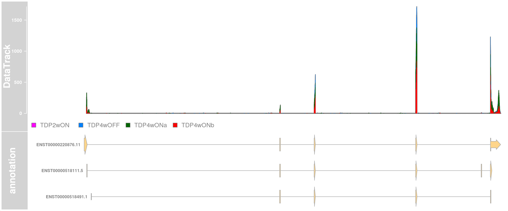
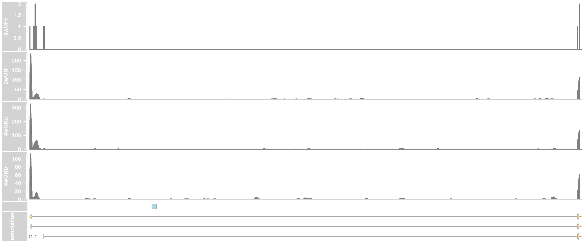
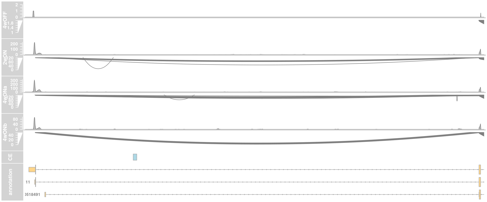
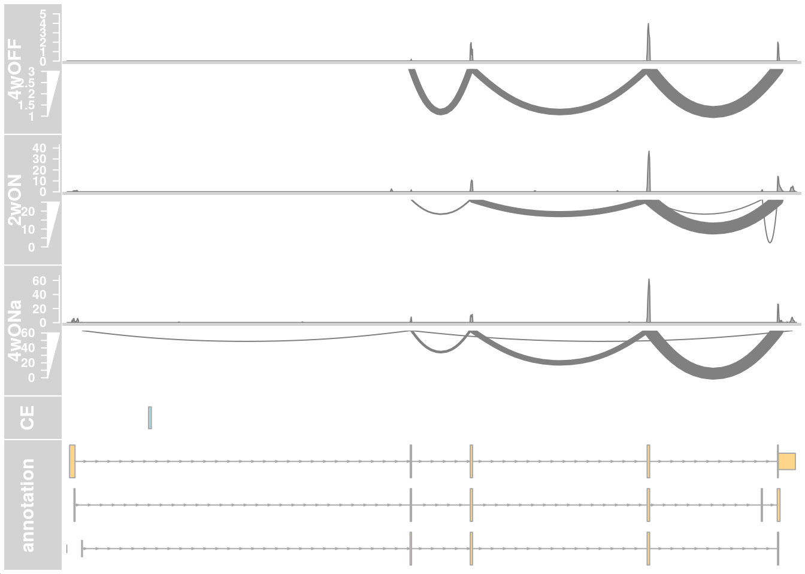
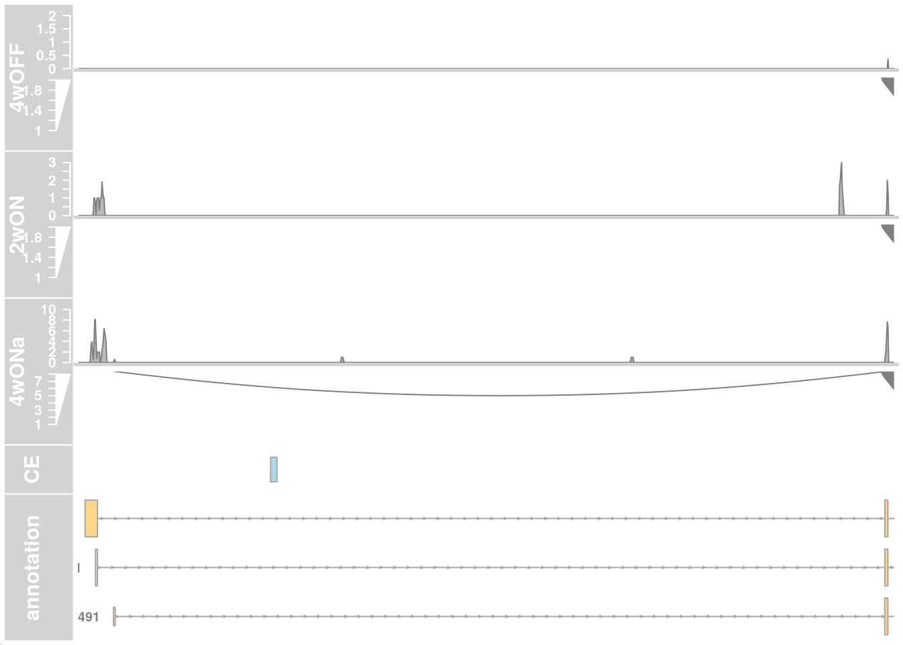
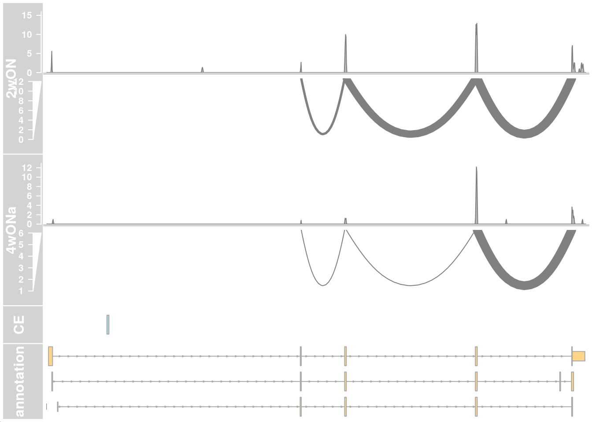
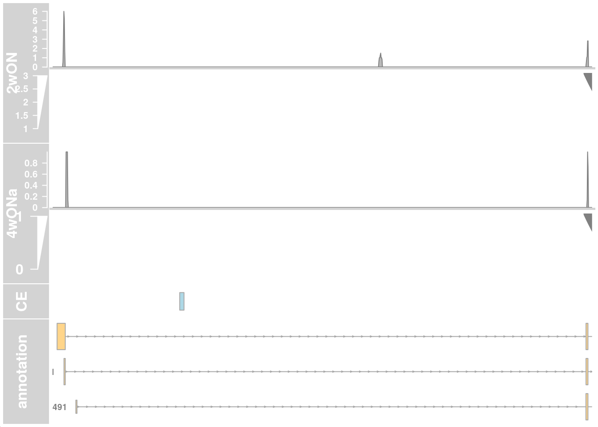

Stathmin 2 read coverage
Katharina Hembach
25/02/2021
Last updated: 2021-02-25
Checks: 7 0
Knit directory: neural_scRNAseq/
This reproducible R Markdown analysis was created with workflowr (version 1.6.2). The Checks tab describes the reproducibility checks that were applied when the results were created. The Past versions tab lists the development history.
Great! Since the R Markdown file has been committed to the Git repository, you know the exact version of the code that produced these results.
Great job! The global environment was empty. Objects defined in the global environment can affect the analysis in your R Markdown file in unknown ways. For reproduciblity it's best to always run the code in an empty environment.
The command set.seed(20200522) was run prior to running the code in the R Markdown file. Setting a seed ensures that any results that rely on randomness, e.g. subsampling or permutations, are reproducible.
Great job! Recording the operating system, R version, and package versions is critical for reproducibility.
Nice! There were no cached chunks for this analysis, so you can be confident that you successfully produced the results during this run.
Great job! Using relative paths to the files within your workflowr project makes it easier to run your code on other machines.
Great! You are using Git for version control. Tracking code development and connecting the code version to the results is critical for reproducibility.
The results in this page were generated with repository version 85bfc60. See the Past versions tab to see a history of the changes made to the R Markdown and HTML files.
Note that you need to be careful to ensure that all relevant files for the analysis have been committed to Git prior to generating the results (you can use wflow_publish or wflow_git_commit). workflowr only checks the R Markdown file, but you know if there are other scripts or data files that it depends on. Below is the status of the Git repository when the results were generated:
Ignored files:
Ignored: .DS_Store
Ignored: .Rhistory
Ignored: .Rproj.user/
Ignored: ._.DS_Store
Ignored: ._Rplots.pdf
Ignored: ._Unfiltered.pdf
Ignored: .__workflowr.yml
Ignored: ._coverage.pdf
Ignored: ._coverage_sashimi.pdf
Ignored: ._coverage_sashimi.png
Ignored: ._neural_scRNAseq.Rproj
Ignored: ._sashimi.pdf
Ignored: ._stmn2.pdf
Ignored: ._tdp.pdf
Ignored: analysis/.DS_Store
Ignored: analysis/.Rhistory
Ignored: analysis/._.DS_Store
Ignored: analysis/._01-preprocessing.Rmd
Ignored: analysis/._01-preprocessing.html
Ignored: analysis/._02.1-SampleQC.Rmd
Ignored: analysis/._03-filtering.Rmd
Ignored: analysis/._04-clustering.Rmd
Ignored: analysis/._04-clustering.knit.md
Ignored: analysis/._04.1-cell_cycle.Rmd
Ignored: analysis/._05-annotation.Rmd
Ignored: analysis/._Lam-0-NSC_no_integration.Rmd
Ignored: analysis/._Lam-01-NSC_integration.Rmd
Ignored: analysis/._Lam-02-NSC_annotation.Rmd
Ignored: analysis/._NSC-1-clustering.Rmd
Ignored: analysis/._NSC-2-annotation.Rmd
Ignored: analysis/.__site.yml
Ignored: analysis/._additional_filtering.Rmd
Ignored: analysis/._additional_filtering_clustering.Rmd
Ignored: analysis/._index.Rmd
Ignored: analysis/._organoid-01-1-qualtiy-control.Rmd
Ignored: analysis/._organoid-01-clustering.Rmd
Ignored: analysis/._organoid-02-integration.Rmd
Ignored: analysis/._organoid-03-cluster_analysis.Rmd
Ignored: analysis/._organoid-04-group_integration.Rmd
Ignored: analysis/._organoid-04-stage_integration.Rmd
Ignored: analysis/._organoid-05-group_integration_cluster_analysis.Rmd
Ignored: analysis/._organoid-05-stage_integration_cluster_analysis.Rmd
Ignored: analysis/._organoid-06-1-prepare-sce.Rmd
Ignored: analysis/._organoid-06-conos-analysis-Seurat.Rmd
Ignored: analysis/._organoid-06-conos-analysis-function.Rmd
Ignored: analysis/._organoid-06-conos-analysis.Rmd
Ignored: analysis/._organoid-06-group-integration-conos-analysis.Rmd
Ignored: analysis/._organoid-07-conos-visualization.Rmd
Ignored: analysis/._organoid-07-group-integration-conos-visualization.Rmd
Ignored: analysis/._organoid-08-conos-comparison.Rmd
Ignored: analysis/._organoid-0x-sample_integration.Rmd
Ignored: analysis/01-preprocessing_cache/
Ignored: analysis/02-1-SampleQC_cache/
Ignored: analysis/02-quality_control_cache/
Ignored: analysis/02.1-SampleQC_cache/
Ignored: analysis/03-filtering_cache/
Ignored: analysis/04-clustering_cache/
Ignored: analysis/04.1-cell_cycle_cache/
Ignored: analysis/05-annotation_cache/
Ignored: analysis/06-clustering-all-timepoints_cache/
Ignored: analysis/07-cluster-analysis-all-timepoints_cache/
Ignored: analysis/Lam-01-NSC_integration_cache/
Ignored: analysis/Lam-02-NSC_annotation_cache/
Ignored: analysis/NSC-1-clustering_cache/
Ignored: analysis/NSC-2-annotation_cache/
Ignored: analysis/TDP-01-preprocessing_cache/
Ignored: analysis/TDP-02-quality_control_cache/
Ignored: analysis/TDP-03-filtering_cache/
Ignored: analysis/TDP-04-clustering_cache/
Ignored: analysis/TDP-05-00-filtering-plasmid-QC_cache/
Ignored: analysis/TDP-05-plasmid_expression_cache/
Ignored: analysis/TDP-06-cluster_analysis_cache/
Ignored: analysis/TDP-07-cluster_12_cache/
Ignored: analysis/TDP-08-00-clustering-HA-D96_cache/
Ignored: analysis/TDP-08-clustering-timeline-HA_cache/
Ignored: analysis/additional_filtering_cache/
Ignored: analysis/additional_filtering_clustering_cache/
Ignored: analysis/organoid-01-1-qualtiy-control_cache/
Ignored: analysis/organoid-01-clustering_cache/
Ignored: analysis/organoid-02-integration_cache/
Ignored: analysis/organoid-03-cluster_analysis_cache/
Ignored: analysis/organoid-04-group_integration_cache/
Ignored: analysis/organoid-04-stage_integration_cache/
Ignored: analysis/organoid-05-group_integration_cluster_analysis_cache/
Ignored: analysis/organoid-05-stage_integration_cluster_analysis_cache/
Ignored: analysis/organoid-06-conos-analysis_cache/
Ignored: analysis/organoid-06-conos-analysis_test_cache/
Ignored: analysis/organoid-06-group-integration-conos-analysis_cache/
Ignored: analysis/organoid-07-conos-visualization_cache/
Ignored: analysis/organoid-07-group-integration-conos-visualization_cache/
Ignored: analysis/organoid-08-conos-comparison_cache/
Ignored: analysis/organoid-0x-sample_integration_cache/
Ignored: analysis/sample5_QC_cache/
Ignored: analysis/timepoints-01-organoid-integration_cache/
Ignored: data/.DS_Store
Ignored: data/._.DS_Store
Ignored: data/._.smbdeleteAAA17ed8b4b
Ignored: data/._Lam_figure2_markers.R
Ignored: data/._Reactive_astrocytes_markers.xlsx
Ignored: data/._known_NSC_markers.R
Ignored: data/._known_cell_type_markers.R
Ignored: data/._metadata.csv
Ignored: data/._virus_cell_tropism_markers.R
Ignored: data/._~$Reactive_astrocytes_markers.xlsx
Ignored: data/data_sushi/
Ignored: data/filtered_feature_matrices/
Ignored: output/.DS_Store
Ignored: output/._.DS_Store
Ignored: output/._NSC_cluster2_marker_genes.txt
Ignored: output/._TDP-06-no_integration_cluster12_marker_genes.txt
Ignored: output/._TDP-06-no_integration_cluster13_marker_genes.txt
Ignored: output/._organoid_integration_cluster1_marker_genes.txt
Ignored: output/Lam-01-clustering.rds
Ignored: output/NSC_1_clustering.rds
Ignored: output/NSC_cluster1_marker_genes.txt
Ignored: output/NSC_cluster2_marker_genes.txt
Ignored: output/NSC_cluster3_marker_genes.txt
Ignored: output/NSC_cluster4_marker_genes.txt
Ignored: output/NSC_cluster5_marker_genes.txt
Ignored: output/NSC_cluster6_marker_genes.txt
Ignored: output/NSC_cluster7_marker_genes.txt
Ignored: output/TDP-06-no_integration_cluster0_marker_genes.txt
Ignored: output/TDP-06-no_integration_cluster10_marker_genes.txt
Ignored: output/TDP-06-no_integration_cluster11_marker_genes.txt
Ignored: output/TDP-06-no_integration_cluster12_marker_genes.txt
Ignored: output/TDP-06-no_integration_cluster13_marker_genes.txt
Ignored: output/TDP-06-no_integration_cluster14_marker_genes.txt
Ignored: output/TDP-06-no_integration_cluster15_marker_genes.txt
Ignored: output/TDP-06-no_integration_cluster16_marker_genes.txt
Ignored: output/TDP-06-no_integration_cluster17_marker_genes.txt
Ignored: output/TDP-06-no_integration_cluster1_marker_genes.txt
Ignored: output/TDP-06-no_integration_cluster2_marker_genes.txt
Ignored: output/TDP-06-no_integration_cluster3_marker_genes.txt
Ignored: output/TDP-06-no_integration_cluster4_marker_genes.txt
Ignored: output/TDP-06-no_integration_cluster5_marker_genes.txt
Ignored: output/TDP-06-no_integration_cluster6_marker_genes.txt
Ignored: output/TDP-06-no_integration_cluster7_marker_genes.txt
Ignored: output/TDP-06-no_integration_cluster8_marker_genes.txt
Ignored: output/TDP-06-no_integration_cluster9_marker_genes.txt
Ignored: output/TDP-06_scran_markers.rds
Ignored: output/additional_filtering.rds
Ignored: output/conos/
Ignored: output/conos_organoid-06-conos-analysis.rds
Ignored: output/conos_organoid-06-group-integration-conos-analysis.rds
Ignored: output/figures/
Ignored: output/organoid_integration_cluster10_marker_genes.txt
Ignored: output/organoid_integration_cluster11_marker_genes.txt
Ignored: output/organoid_integration_cluster12_marker_genes.txt
Ignored: output/organoid_integration_cluster13_marker_genes.txt
Ignored: output/organoid_integration_cluster14_marker_genes.txt
Ignored: output/organoid_integration_cluster15_marker_genes.txt
Ignored: output/organoid_integration_cluster16_marker_genes.txt
Ignored: output/organoid_integration_cluster17_marker_genes.txt
Ignored: output/organoid_integration_cluster1_marker_genes.txt
Ignored: output/organoid_integration_cluster2_marker_genes.txt
Ignored: output/organoid_integration_cluster3_marker_genes.txt
Ignored: output/organoid_integration_cluster4_marker_genes.txt
Ignored: output/organoid_integration_cluster5_marker_genes.txt
Ignored: output/organoid_integration_cluster6_marker_genes.txt
Ignored: output/organoid_integration_cluster7_marker_genes.txt
Ignored: output/organoid_integration_cluster8_marker_genes.txt
Ignored: output/organoid_integration_cluster9_marker_genes.txt
Ignored: output/sce_01_preprocessing.rds
Ignored: output/sce_02_quality_control.rds
Ignored: output/sce_03_filtering.rds
Ignored: output/sce_03_filtering_all_genes.rds
Ignored: output/sce_06-1-prepare-sce.rds
Ignored: output/sce_TDP_01_preprocessing.rds
Ignored: output/sce_TDP_02_quality_control.rds
Ignored: output/sce_TDP_03_filtering.rds
Ignored: output/sce_TDP_03_filtering_all_genes.rds
Ignored: output/sce_organoid-01-clustering.rds
Ignored: output/sce_preprocessing.rds
Ignored: output/so_04-group_integration.rds
Ignored: output/so_04-stage_integration.rds
Ignored: output/so_04_1_cell_cycle.rds
Ignored: output/so_04_clustering.rds
Ignored: output/so_06-clustering_all_timepoints.rds
Ignored: output/so_08-00_clustering_HA_D96.rds
Ignored: output/so_08-clustering_timeline_HA.rds
Ignored: output/so_0x-sample_integration.rds
Ignored: output/so_TDP-06-cluster-analysis.rds
Ignored: output/so_TDP_04_clustering.rds
Ignored: output/so_TDP_05_plasmid_expression.rds
Ignored: output/so_additional_filtering_clustering.rds
Ignored: output/so_integrated_organoid-02-integration.rds
Ignored: output/so_merged_organoid-02-integration.rds
Ignored: output/so_organoid-01-clustering.rds
Ignored: output/so_sample_organoid-01-clustering.rds
Ignored: scripts/.DS_Store
Ignored: scripts/._.DS_Store
Ignored: scripts/._bu_Rcode.R
Ignored: scripts/._plasmid_expression.sh
Untracked files:
Untracked: Filtered.pdf
Untracked: Rplots.pdf
Untracked: Unfiltered
Untracked: Unfiltered.pdf
Untracked: analysis/Lam-0-NSC_no_integration.Rmd
Untracked: analysis/TDP-07-01-STMN2_expression copy.Rmd
Untracked: analysis/TDP-08-01-HA-D96-expression-changes.Rmd
Untracked: analysis/additional_filtering.Rmd
Untracked: analysis/additional_filtering_clustering.Rmd
Untracked: analysis/organoid-01-1-qualtiy-control.Rmd
Untracked: analysis/organoid-06-conos-analysis-Seurat.Rmd
Untracked: analysis/organoid-06-conos-analysis-function.Rmd
Untracked: analysis/organoid-07-conos-visualization.Rmd
Untracked: analysis/organoid-07-group-integration-conos-visualization.Rmd
Untracked: analysis/organoid-08-conos-comparison.Rmd
Untracked: analysis/organoid-0x-sample_integration.Rmd
Untracked: analysis/sample5_QC.Rmd
Untracked: coverage.pdf
Untracked: coverage_sashimi.pdf
Untracked: coverage_sashimi.png
Untracked: data/Homo_sapiens.GRCh38.98.sorted.gtf
Untracked: data/Kanton_et_al/
Untracked: data/Lam_et_al/
Untracked: data/Sep2020/
Untracked: data/reference/
Untracked: data/virus_cell_tropism_markers.R
Untracked: data/~$Reactive_astrocytes_markers.xlsx
Untracked: sashimi.pdf
Untracked: scripts/bu_Rcode.R
Untracked: scripts/salmon-latest_linux_x86_64/
Untracked: stmn2.pdf
Untracked: tdp.pdf
Unstaged changes:
Modified: analysis/05-annotation.Rmd
Modified: analysis/Lam-02-NSC_annotation.Rmd
Modified: analysis/TDP-04-clustering.Rmd
Modified: analysis/TDP-06-cluster_analysis.Rmd
Modified: analysis/_site.yml
Modified: analysis/organoid-02-integration.Rmd
Modified: analysis/organoid-04-group_integration.Rmd
Modified: analysis/organoid-06-conos-analysis.Rmd
Modified: analysis/timepoints-01-organoid-integration.Rmd
Note that any generated files, e.g. HTML, png, CSS, etc., are not included in this status report because it is ok for generated content to have uncommitted changes.
These are the previous versions of the repository in which changes were made to the R Markdown (analysis/TDP-07-01-STMN2_expression.Rmd) and HTML (docs/TDP-07-01-STMN2_expression.html) files. If you've configured a remote Git repository (see ?wflow_git_remote), click on the hyperlinks in the table below to view the files as they were in that past version.
| File | Version | Author | Date | Message |
|---|---|---|---|---|
| Rmd | 85bfc60 | khembach | 2021-02-25 | add cryptic exon location and splice junctions to plot |
| html | a02eb1b | khembach | 2021-02-25 | Build site. |
| Rmd | f01a91a | khembach | 2021-02-25 | add cryptic exon location and splice junctions to plot |
| html | 5340095 | khembach | 2021-02-19 | Build site. |
| Rmd | 4ddbb0d | khembach | 2021-02-19 | text size |
| html | a7c4a5b | khembach | 2021-02-18 | Build site. |
| Rmd | 1755a27 | khembach | 2021-02-18 | plot stathmin2 read coverage of cells from cluster 12 |
Load packages
library(Seurat)
library(SingleCellExperiment)
library(dplyr)
library(Gviz)
library(TxDb.Hsapiens.UCSC.hg38.knownGene)
library(Rsamtools)
library(GenomicAlignments)
library(rtracklayer)Load data & convert to SCE
so <- readRDS(file.path("output", "so_TDP_05_plasmid_expression.rds"))
so <- SetIdent(so, value = "RNA_snn_res.0.4")
so@meta.data$cluster_id <- Idents(so)Cells from cluster 12
We want to compare the stathmin2 read coverage of cells expressing TDP-HA (from cluster 12) and other neuronal cells without TDP-HA expression. For this, we randomly select 5 cells from each group and filter the corresponding stathmin2 reads from the BAM file.
clus12 <- subset(so, subset = cluster_id == "12")
## from which sample do the cells come from?
clus12$sample_id %>% table.
TDP2wON TDP4wOFF TDP4wONa TDP4wONb
97 3 88 36 ## what is the range of TDP-HA expression in all cells in cluster 12?
dat_ha <- GetAssayData(object = clus12, slot = "data")["TDP43-HA",]
summary(dat_ha) Min. 1st Qu. Median Mean 3rd Qu. Max.
0.000 1.226 1.771 1.800 2.454 4.112 ## select cells with high TDP-HA expression
high <- clus12[which(dat_ha > 3.5)]
high$barcode %>% headAAAGGATGTGTCATTG-1.TDP2wON AAAGTGAAGAGATTCA-1.TDP2wON
"AAAGGATGTGTCATTG-1" "AAAGTGAAGAGATTCA-1"
AACAACCGTGGCCTCA-1.TDP2wON AAGAACAAGCGTACAG-1.TDP2wON
"AACAACCGTGGCCTCA-1" "AAGAACAAGCGTACAG-1"
AAGACTCGTTGCAACT-1.TDP2wON AATCACGCAAATGGAT-1.TDP2wON
"AAGACTCGTTGCAACT-1" "AATCACGCAAATGGAT-1" ## cells with low TDP-HA expression
low <- clus12[which(dat_ha < 0.5 & dat_ha > 0)]
low$barcode %>% headAAAGGATGTGTCATTG-1.TDP2wON AAAGTGAAGAGATTCA-1.TDP2wON
"AAAGGATGTGTCATTG-1" "AAAGTGAAGAGATTCA-1"
AACAACCGTGGCCTCA-1.TDP2wON AAGAACAAGCGTACAG-1.TDP2wON
"AACAACCGTGGCCTCA-1" "AAGAACAAGCGTACAG-1"
AAGACTCGTTGCAACT-1.TDP2wON AATCACGCAAATGGAT-1.TDP2wON
"AAGACTCGTTGCAACT-1" "AATCACGCAAATGGAT-1" Get stathmin2 reads of selected cells
We extract the reads covering the stathmin2 genes of the selected cells.
bams <- list(TDP4wOFF = file.path("data", "Sep2020", "CellRangerCount_50076_2020-09-22--15-40-54",
"no1_Neural_cuture_d_96_TDP-43-HA_4w_DOXoff",
"possorted_genome_bam.bam"),
TDP2wON = file.path("data", "Sep2020", "CellRangerCount_50076_2020-09-22--15-40-54",
"no2_Neural_cuture_d_96_TDP-43-HA_2w_DOXON",
"possorted_genome_bam.bam"),
TDP4wONa = file.path("data", "Sep2020", "CellRangerCount_50076_2020-09-22--15-40-54",
"no3_Neural_cuture_d_96_TDP-43-HA_4w_DOXONa",
"possorted_genome_bam.bam"),
TDP4wONb = file.path("data", "Sep2020", "CellRangerCount_50076_2020-09-22--15-40-54",
"no4_Neural_cuture_d_96_TDP-43-HA_4w_DOXONb",
"possorted_genome_bam.bam"))
chr <- "chr8"
region_start <- 79611100
region_end <- 79666200
stmn2 <- GRanges(chr, IRanges(region_start, region_end), "+")
# keep all reads from cells in cluster 12
param <- ScanBamParam(which=stmn2, what = c("qname"), tag = "CB",
tagFilter = list(CB = clus12$barcode))
gals <- lapply(bams, function(x) {
readGAlignments(x, use.names = TRUE, param=param)
})
covs <- lapply(gals, coverage)Ploting with Gviz
Plot the stathmin2 transcripts and the read coverage of all cells from cluster 12.
## gene annotations from UCSC
options(ucscChromosomeNames = FALSE)
eTrack <- GeneRegionTrack(TxDb.Hsapiens.UCSC.hg38.knownGene,
chromosome = chr, start = region_start,
end = region_end, name = "annotation")
coords <- 79611100:79666201
dat <- matrix(c(as.vector(covs[[1]]$chr8[region_start:region_end]),
as.vector(covs[[2]]$chr8[region_start:region_end]),
as.vector(covs[[3]]$chr8[region_start:region_end]),
as.vector(covs[[4]]$chr8[region_start:region_end])),
nrow = 4, byrow = TRUE)
rownames(dat) <- names(covs)
dtrack <- DataTrack(data = dat,
start = coords[-length(coords)], end = coords[-1], chromosome = chr,
genome = "hg38")
plotTracks(c(dtrack, eTrack),
type = "histogram", showSampleNames = TRUE,
shape = "arrow", geneSymbols = TRUE, aggregateGroups=FALSE,
groups = c("TDP4wOFF", "TDP2wON", "TDP4wONa", "TDP4wONb"),
stackedBars = FALSE, fontsize=13 )
## one data track per sample
dats <- list("4wOFF" = matrix(as.vector(covs[[1]]$chr8[region_start:region_end]),
nrow = 1, byrow = TRUE),
"2wON" = matrix(as.vector(covs[[2]]$chr8[region_start:region_end]),
nrow = 1, byrow = TRUE),
"4wONa" = matrix(as.vector(covs[[3]]$chr8[region_start:region_end]),
nrow = 1, byrow = TRUE),
"4wONb" = matrix(as.vector(covs[[4]]$chr8[region_start:region_end]),
nrow = 1, byrow = TRUE))
# rownames(dat) <- names(covs)
dtrack_4wOFF <- DataTrack(data = dats[[1]],
start = coords[-length(coords)], end = coords[-1], chromosome = chr,
genome = "hg38", name = "4wOFF")
dtrack_2wON <- DataTrack(data = dats[[2]],
start = coords[-length(coords)], end = coords[-1], chromosome = chr,
genome = "hg38", name = "2wON")
dtrack_4wONa <- DataTrack(data = dats[[3]],
start = coords[-length(coords)], end = coords[-1], chromosome = chr,
genome = "hg38", name = "4wONa")
dtrack_4wONb <- DataTrack(data = dats[[4]],
start = coords[-length(coords)], end = coords[-1], chromosome = chr,
genome = "hg38", name = "4wONb")
plotTracks(c(dtrack_4wOFF, dtrack_2wON, dtrack_4wONa, dtrack_4wONb, eTrack),
type = "histogram", showSampleNames = TRUE,
shape = "arrow", geneSymbols = TRUE, aggregateGroups=FALSE,
stackedBars = FALSE, fontsize=13)
## zoom into intron 1 that contains the cryptic exon
chr <- "chr8"
region_start <- 79611100
region_end <- 79637000
plotTracks(c(dtrack_4wOFF, dtrack_2wON, dtrack_4wONa, dtrack_4wONb, eTrack),
type = "histogram", showSampleNames = TRUE,
chromosome = chr, from = region_start, to = region_end,
shape = "arrow", geneSymbols = TRUE, aggregateGroups=FALSE,
stackedBars = FALSE, fontsize=13)
## cryptic exon location: HG19 Chr8: 80,529,075-80,529,28
## in hg38: chr8:79616840-79617049
ce_start <- 79616840
ce_end <- 79617049
ceTrack <- AnnotationTrack(start = ce_start, end = ce_end, chromosome = chr,
strand = "*", genome = "hg38", name = "CE")
plotTracks(c(dtrack_4wOFF, dtrack_2wON, dtrack_4wONa, dtrack_4wONb,
ceTrack, eTrack),
type = "histogram", showSampleNames = TRUE,
chromosome = chr, from = region_start, to = region_end,
shape = "arrow", geneSymbols = TRUE, aggregateGroups=FALSE,
stackedBars = FALSE, fontsize=13)
| Version | Author | Date |
|---|---|---|
| a02eb1b | khembach | 2021-02-25 |
Splice junctions
Are there any splice junctions in the first intron?
We define new functions that allow us to filter the BAM files basd on barcodes:
####### import only reads from cells of cluster 12
## function is copid and modified from the Gviz package
.import.bam.alignments.cells <- function(file, selection) {
indNames <- c(sub("\\.bam$", ".bai", file), paste(file, "bai", sep = "."))
index <- NULL
for (i in indNames) {
if (file.exists(i)) {
index <- i
break
}
}
if (is.null(index)) {
stop(
"Unable to find index for BAM file '", file, "'. You can build an index using the following command:\n\t",
"library(Rsamtools)\n\tindexBam(\"", file, "\")"
)
}
pairedEnd <- parent.env(environment())[["._isPaired"]]
if (is.null(pairedEnd)) {
pairedEnd <- TRUE
}
flag <- parent.env(environment())[["._flag"]]
if (is.null(flag)) {
flag <- scanBamFlag(isUnmappedQuery = FALSE)
}
bf <- BamFile(file, index = index, asMates = pairedEnd)
cells <- parent.env(environment())[["._cells"]]
if(!is.null(cells)){
param <- ScanBamParam(which = selection, what = scanBamWhat(),
tag = c("MD", "CB"), flag = flag,
tagFilter = list(CB = cells))
} else{
param <- ScanBamParam(which = selection, what = scanBamWhat(),
tag = "MD", flag = flag)
}
reads <- if (as.character(seqnames(selection)[1]) %in% names(scanBamHeader(bf)$targets)) scanBam(bf, param = param)[[1]] else list()
md <- if (is.null(reads$tag$MD)) rep(as.character(NA), length(reads$pos)) else reads$tag$MD
if (length(reads$pos)) {
layed_seq <- sequenceLayer(reads$seq, reads$cigar)
region <- unlist(bamWhich(param), use.names = FALSE)
ans <- stackStrings(layed_seq, start(region), end(region), shift = reads$pos - 1L, Lpadding.letter = "+", Rpadding.letter = "+")
names(ans) <- seq_along(reads$qname)
} else {
ans <- DNAStringSet()
}
return(GRanges(
seqnames = if (is.null(reads$rname)) character() else reads$rname,
strand = if (is.null(reads$strand)) character() else reads$strand,
ranges = IRanges(start = reads$pos, width = reads$qwidth),
id = if (is.null(reads$qname)) character() else reads$qname,
cigar = if (is.null(reads$cigar)) character() else reads$cigar,
mapq = if (is.null(reads$mapq)) integer() else reads$mapq,
flag = if (is.null(reads$flag)) integer() else reads$flag,
md = md, seq = ans,
isize = if (is.null(reads$isize)) integer() else reads$isize,
groupid = if (pairedEnd) if (is.null(reads$groupid)) integer() else reads$groupid else seq_along(reads$pos),
status = if (pairedEnd) {
if (is.null(reads$mate_status)) factor(levels = c("mated", "ambiguous", "unmated")) else reads$mate_status
} else {
rep(
factor("unmated", levels = c("mated", "ambiguous", "unmated")),
length(reads$pos)
)
}
))
}
## Constructor
AlignmentsTrack <- function(range = NULL, start = NULL, end = NULL, width = NULL, strand, chromosome, genome,
stacking = "squish", id, cigar, mapq, flag = scanBamFlag(isUnmappedQuery = FALSE), isize, groupid, status, md, seqs,
name = "AlignmentsTrack", isPaired = TRUE, importFunction, referenceSequence, cells = NULL, ...) {
## Some defaults
if (missing(importFunction)) {
importFunction <- .import.bam.alignments
}
covars <- Gviz:::.getCovars(range)
isStream <- FALSE
if (!is.character(range)) {
n <- max(c(length(start), length(end), length(width)), nrow(covars))
id <- Gviz:::.covDefault(id, covars[["id"]], paste("read", seq_len(n), sep = "_"))
cigar <- Gviz:::.covDefault(cigar, covars[["cigar"]], paste(if (is(range, "GRangesOrIRanges")) width(range) else width, "M", sep = ""))
mapq <- Gviz:::.covDefault(mapq, covars[["mapq"]], rep(as.integer(NA), n))
flag <- Gviz:::.covDefault(flag, covars[["flag"]], rep(as.integer(NA), n))
isize <- Gviz:::.covDefault(isize, covars[["isize"]], rep(as.integer(NA), n))
groupid <- Gviz:::.covDefault(groupid, covars[["groupid"]], seq_len(n))
md <- Gviz:::.covDefault(md, covars[["md"]], rep(as.character(NA), n))
status <- Gviz:::.covDefault(status, covars[["status"]], ifelse(groupid %in% groupid[duplicated(groupid)], "mated", "unmated"))
}
## Build a GRanges object from the inputs
Gviz:::.missingToNull(c(
"strand", "chromosome", "importFunction", "genome", "id", "cigar", "mapq", "flag", "isize", "groupid", "status",
"md", "seqs", "referenceSequence"
))
args <- list(
id = id, cigar = cigar, mapq = mapq, flag = flag, isize = isize, groupid = groupid, status = status, strand = strand, md = md,
chromosome = chromosome, genome = genome
)
defs <- list(
strand = "*", chromosome = "chrNA", genome = NA, id = as.character(NA), cigar = as.character(NA), mapq = as.integer(NA),
flag = as.integer(NA), isize = as.integer(NA), groupid = as.character(NA), status = as.character(NA), md = as.character(NA)
)
range <- Gviz:::.buildRange(
range = range, start = start, end = end, width = width,
args = args, defaults = defs, chromosome = chromosome, trackType = "AlignmentsTrack",
importFun = importFunction, stream = TRUE, autodetect = TRUE, ...
)
## This is going to be a list if we have to stream data from a file, otherwise we can compute some additional values
if (is.list(range)) {
isStream <- TRUE
slist <- range
range <- GRanges()
stackRanges <- GRanges()
stacks <- NULL
seqs <- DNAStringSet()
} else {
if (is.null(seqs)) {
seqs <- DNAStringSet(vapply(width(range), function(x) paste(rep("N", x), collapse = ""), character(1)))
}
addArgs <- list(...)
if ("showIndels" %in% names(addArgs)) {
showIndels <- addArgs$showIndels
} else {
showIndels <- FALSE
}
tmp <- .computeAlignments(range, drop.D.ranges = showIndels)
range <- tmp$range
stackRanges <- tmp$stackRange
stacks <- tmp$stacks
}
## If no chromosome was explicitly asked for we just take the first one in the GRanges object
if (missing(chromosome) || is.null(chromosome)) {
chromosome <- if (length(range) > 0) Gviz:::.chrName(as.character(seqnames(range)[1])) else "chrNA"
}
## And finally the object instantiation
genome <- Gviz:::.getGenomeFromGRange(range, ifelse(is.null(genome), character(), genome[1]))
if (!isStream) {
return(new("AlignmentsTrack",
chromosome = chromosome[1], range = range, stacks = stacks,
name = name, genome = genome, stacking = stacking, stackRanges = stackRanges, sequences = seqs,
referenceSequence = referenceSequence, ...
))
} else {
## A bit hackish but for some functions we may want to know which track type we need but at the
## same time we do not want to enforce this as an additional argument
e <- new.env()
e[["._trackType"]] <- "AlignmentsTrack"
e[["._isPaired"]] <- isPaired
e[["._flag"]] <- flag
e[["._cells"]] <- cells
environment(slist[["stream"]]) <- e
return(new("ReferenceAlignmentsTrack",
chromosome = chromosome[1], range = range, stackRanges = stackRanges,
name = name, genome = genome, stacking = stacking, stream = slist[["stream"]], reference = slist[["reference"]],
mapping = slist[["mapping"]], args = args, defaults = defs, stacks = stacks, referenceSequence = referenceSequence, ...
))
}
}## STMN2 gene range
chr <- "chr8"
region_start <- 79611100
region_end <- 79666200
# Create the alignments track
alTrack_4wOFF <- AlignmentsTrack(
range = bams[["TDP4wOFF"]],
isPaired = FALSE, chromosome = chr, from = region_start, to = region_end,
cells = clus12$barcode[clus12$sample_id == "TDP4wOFF"],
importFunction = .import.bam.alignments.cells, name = "4wOFF")
alTrack_2wON <- AlignmentsTrack(
range = bams[["TDP2wON"]],
isPaired = FALSE, chromosome = chr, from = region_start, to = region_end,
cells = clus12$barcode[clus12$sample_id == "TDP2wON"],
importFunction = .import.bam.alignments.cells, name = "2wON")
alTrack_4wONa <- AlignmentsTrack(
range = bams[["TDP4wONa"]],
isPaired = FALSE, chromosome = chr, from = region_start, to = region_end,
cells = clus12$barcode[clus12$sample_id == "TDP4wONa"],
importFunction = .import.bam.alignments.cells, name = "4wONa")
alTrack_4wONb <- AlignmentsTrack(
range = bams[["TDP4wONb"]],
isPaired = FALSE, chromosome = chr, from = region_start, to = region_end,
cells = clus12$barcode[clus12$sample_id == "TDP4wONb"],
importFunction = .import.bam.alignments.cells, name = "4wONb")
## import GTF with gene annotation
gtf <- import(file.path("data", "Homo_sapiens.GRCh38.98.sorted.gtf"))
### import GTF, transfort to TxDb and create GeneRegionTrack
seqlevelsStyle(gtf) <- "UCSC"
txdb <- makeTxDbFromGRanges(gtf)Warning in .get_cds_IDX(mcols0$type, mcols0$phase): The "phase" metadata column contains non-NA values for features of type
stop_codon. This information was ignored.gtftrack <- GeneRegionTrack(txdb, name = "annotation")
## Whole gene
plotTracks(c(alTrack_4wOFF, alTrack_2wON, alTrack_4wONa, alTrack_4wONb,
ceTrack, gtftrack),
type = c("coverage", "sashimi"),
chromosome = chr, from = region_start, to = region_end,
extend.left = 500, extend.right = 100,
fontsize=13,
sizes = c(rep(3, 4), 1, 3),
transcriptAnnotation = "transcript")
| Version | Author | Date |
|---|---|---|
| a02eb1b | khembach | 2021-02-25 |
## only first intron
## zoom into intron 1 that contains the cryptic exon
region_start <- 79611100
region_end <- 79637000
plotTracks(c(alTrack_4wOFF,
alTrack_2wON, alTrack_4wONa, alTrack_4wONb,
ceTrack, gtftrack),
type = c("coverage", "sashimi"),
chromosome = chr, from = region_start, to = region_end,
extend.left = 500, extend.right = 100,
fontsize=13,
sizes = c(rep(3, 4), 1, 3),
transcriptAnnotation = "transcript")
| Version | Author | Date |
|---|---|---|
| a02eb1b | khembach | 2021-02-25 |
Read coverage in cells with low and high TDP-HA expression from cluster 12
## LOW ##
chr <- "chr8"
region_start <- 79611100
region_end <- 79666200
# Create the alignments track
alTrack_4wOFF <- AlignmentsTrack(
range = bams[["TDP4wOFF"]],
isPaired = FALSE, chromosome = chr, from = region_start, to = region_end,
cells = low$barcode[low$sample_id == "TDP4wOFF"],
importFunction = .import.bam.alignments.cells, name = "4wOFF")
alTrack_2wON <- AlignmentsTrack(
range = bams[["TDP2wON"]],
isPaired = FALSE, chromosome = chr, from = region_start, to = region_end,
cells = low$barcode[low$sample_id == "TDP2wON"],
importFunction = .import.bam.alignments.cells, name = "2wON")
alTrack_4wONa <- AlignmentsTrack(
range = bams[["TDP4wONa"]],
isPaired = FALSE, chromosome = chr, from = region_start, to = region_end,
cells = low$barcode[low$sample_id == "TDP4wONa"],
importFunction = .import.bam.alignments.cells, name = "4wONa")
alTrack_4wONb <- AlignmentsTrack(
range = bams[["TDP4wONb"]],
isPaired = FALSE, chromosome = chr, from = region_start, to = region_end,
cells = low$barcode[low$sample_id == "TDP4wONb"],
importFunction = .import.bam.alignments.cells, name = "4wONb")
plotTracks(c(alTrack_4wOFF, alTrack_2wON, alTrack_4wONa, alTrack_4wONb,
ceTrack, gtftrack),
type = c("coverage", "sashimi"),
chromosome = chr, from = region_start, to = region_end,
extend.left = 500, extend.right = 100,
fontsize=13,
sizes = c(rep(3, 4), 1, 3),
transcriptAnnotation = "transcript")
| Version | Author | Date |
|---|---|---|
| a02eb1b | khembach | 2021-02-25 |
## only first intron
## zoom into intron 1 that contains the cryptic exon
region_start <- 79611100
region_end <- 79637000
plotTracks(c(alTrack_4wOFF,
alTrack_2wON, alTrack_4wONa, alTrack_4wONb,
ceTrack, gtftrack),
type = c("coverage", "sashimi"),
chromosome = chr, from = region_start, to = region_end,
extend.left = 500, extend.right = 100,
fontsize=13,
sizes = c(rep(3, 4), 1, 3),
transcriptAnnotation = "transcript")
| Version | Author | Date |
|---|---|---|
| a02eb1b | khembach | 2021-02-25 |
## HIGH ##
region_start <- 79611100
region_end <- 79666200
# Create the alignments track
alTrack_4wOFF <- AlignmentsTrack(
range = bams[["TDP4wOFF"]],
isPaired = FALSE, chromosome = chr, from = region_start, to = region_end,
cells = high$barcode[high$sample_id == "TDP4wOFF"],
importFunction = .import.bam.alignments.cells, name = "4wOFF")
alTrack_2wON <- AlignmentsTrack(
range = bams[["TDP2wON"]],
isPaired = FALSE, chromosome = chr, from = region_start, to = region_end,
cells = high$barcode[high$sample_id == "TDP2wON"],
importFunction = .import.bam.alignments.cells, name = "2wON")
alTrack_4wONa <- AlignmentsTrack(
range = bams[["TDP4wONa"]],
isPaired = FALSE, chromosome = chr, from = region_start, to = region_end,
cells = high$barcode[high$sample_id == "TDP4wONa"],
importFunction = .import.bam.alignments.cells, name = "4wONa")
alTrack_4wONb <- AlignmentsTrack(
range = bams[["TDP4wONb"]],
isPaired = FALSE, chromosome = chr, from = region_start, to = region_end,
cells = high$barcode[high$sample_id == "TDP4wONb"],
importFunction = .import.bam.alignments.cells, name = "4wONb")
plotTracks(c(alTrack_4wOFF, alTrack_2wON, alTrack_4wONa, alTrack_4wONb,
ceTrack, gtftrack),
type = c("coverage", "sashimi"),
chromosome = chr, from = region_start, to = region_end,
extend.left = 500, extend.right = 100, fontsize=13,
sizes = c(rep(3, 4), 1, 2),
transcriptAnnotation = "transcript")
| Version | Author | Date |
|---|---|---|
| a02eb1b | khembach | 2021-02-25 |
## only first intron
## zoom into intron 1 that contains the cryptic exon
region_start <- 79611100
region_end <- 79637000
plotTracks(c(alTrack_4wOFF,
alTrack_2wON, alTrack_4wONa, alTrack_4wONb,
ceTrack, gtftrack),
type = c("coverage", "sashimi"),
chromosome = chr, from = region_start, to = region_end,
extend.left = 500, extend.right = 100, fontsize=13,
sizes = c(rep(3, 4), 1, 3),
transcriptAnnotation = "transcript")
| Version | Author | Date |
|---|---|---|
| a02eb1b | khembach | 2021-02-25 |
sessionInfo()R version 4.0.0 (2020-04-24)
Platform: x86_64-pc-linux-gnu (64-bit)
Running under: Ubuntu 16.04.6 LTS
Matrix products: default
BLAS: /usr/local/R/R-4.0.0/lib/libRblas.so
LAPACK: /usr/local/R/R-4.0.0/lib/libRlapack.so
locale:
[1] LC_CTYPE=en_US.UTF-8 LC_NUMERIC=C
[3] LC_TIME=en_US.UTF-8 LC_COLLATE=en_US.UTF-8
[5] LC_MONETARY=en_US.UTF-8 LC_MESSAGES=en_US.UTF-8
[7] LC_PAPER=en_US.UTF-8 LC_NAME=C
[9] LC_ADDRESS=C LC_TELEPHONE=C
[11] LC_MEASUREMENT=en_US.UTF-8 LC_IDENTIFICATION=C
attached base packages:
[1] grid parallel stats4 stats graphics grDevices utils
[8] datasets methods base
other attached packages:
[1] rtracklayer_1.48.0
[2] GenomicAlignments_1.24.0
[3] Rsamtools_2.4.0
[4] Biostrings_2.56.0
[5] XVector_0.28.0
[6] TxDb.Hsapiens.UCSC.hg38.knownGene_3.10.0
[7] GenomicFeatures_1.40.0
[8] AnnotationDbi_1.50.1
[9] Gviz_1.32.0
[10] dplyr_1.0.2
[11] SingleCellExperiment_1.10.1
[12] SummarizedExperiment_1.18.1
[13] DelayedArray_0.14.0
[14] matrixStats_0.56.0
[15] Biobase_2.48.0
[16] GenomicRanges_1.40.0
[17] GenomeInfoDb_1.24.2
[18] IRanges_2.22.2
[19] S4Vectors_0.26.1
[20] BiocGenerics_0.34.0
[21] Seurat_3.1.5
[22] workflowr_1.6.2
loaded via a namespace (and not attached):
[1] backports_1.1.9 Hmisc_4.4-1 BiocFileCache_1.12.0
[4] plyr_1.8.6 igraph_1.2.5 lazyeval_0.2.2
[7] splines_4.0.0 BiocParallel_1.22.0 listenv_0.8.0
[10] ggplot2_3.3.2 digest_0.6.25 ensembldb_2.12.1
[13] htmltools_0.5.0 checkmate_2.0.0 magrittr_1.5
[16] memoise_1.1.0 BSgenome_1.56.0 cluster_2.1.0
[19] ROCR_1.0-11 globals_0.12.5 askpass_1.1
[22] prettyunits_1.1.1 jpeg_0.1-8.1 colorspace_1.4-1
[25] blob_1.2.1 rappdirs_0.3.1 ggrepel_0.8.2
[28] xfun_0.15 crayon_1.3.4 RCurl_1.98-1.2
[31] jsonlite_1.7.0 VariantAnnotation_1.34.0 survival_3.2-3
[34] zoo_1.8-8 ape_5.4 glue_1.4.2
[37] gtable_0.3.0 zlibbioc_1.34.0 leiden_0.3.3
[40] future.apply_1.6.0 scales_1.1.1 DBI_1.1.0
[43] Rcpp_1.0.5 htmlTable_2.0.1 viridisLite_0.3.0
[46] progress_1.2.2 reticulate_1.16 foreign_0.8-80
[49] bit_1.1-15.2 rsvd_1.0.3 Formula_1.2-3
[52] tsne_0.1-3 htmlwidgets_1.5.1 httr_1.4.1
[55] RColorBrewer_1.1-2 ellipsis_0.3.1 ica_1.0-2
[58] pkgconfig_2.0.3 XML_3.99-0.4 nnet_7.3-14
[61] uwot_0.1.8 dbplyr_1.4.4 tidyselect_1.1.0
[64] rlang_0.4.7 reshape2_1.4.4 later_1.1.0.1
[67] munsell_0.5.0 tools_4.0.0 generics_0.0.2
[70] RSQLite_2.2.0 ggridges_0.5.2 evaluate_0.14
[73] stringr_1.4.0 yaml_2.2.1 knitr_1.29
[76] bit64_0.9-7 fs_1.4.2 fitdistrplus_1.1-1
[79] purrr_0.3.4 RANN_2.6.1 AnnotationFilter_1.12.0
[82] pbapply_1.4-2 future_1.17.0 nlme_3.1-148
[85] whisker_0.4 biomaRt_2.44.1 rstudioapi_0.11
[88] compiler_4.0.0 plotly_4.9.2.1 curl_4.3
[91] png_0.1-7 tibble_3.0.3 stringi_1.4.6
[94] lattice_0.20-41 ProtGenerics_1.20.0 Matrix_1.2-18
[97] vctrs_0.3.4 pillar_1.4.6 lifecycle_0.2.0
[100] lmtest_0.9-37 RcppAnnoy_0.0.16 data.table_1.12.8
[103] cowplot_1.0.0 bitops_1.0-6 irlba_2.3.3
[106] httpuv_1.5.4 patchwork_1.0.1 R6_2.4.1
[109] latticeExtra_0.6-29 promises_1.1.1 KernSmooth_2.23-17
[112] gridExtra_2.3 codetools_0.2-16 dichromat_2.0-0
[115] MASS_7.3-51.6 assertthat_0.2.1 openssl_1.4.2
[118] rprojroot_1.3-2 sctransform_0.2.1 GenomeInfoDbData_1.2.3
[121] hms_0.5.3 rpart_4.1-15 tidyr_1.1.0
[124] rmarkdown_2.3 Rtsne_0.15 biovizBase_1.36.0
[127] git2r_0.27.1 base64enc_0.1-3